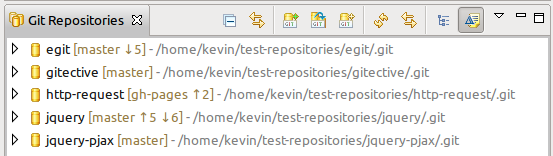
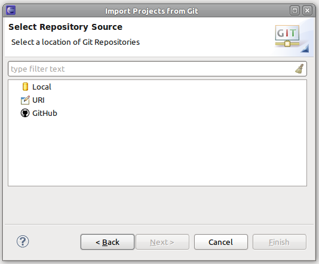

| EGit 1.3 New and Noteworthy |
|
|

|
|
|
Bugs Closed |
Features
Major
Branch Status Decoration
The number of commits that a local branch is ahead & behind a remote branch is now displayed in the project and repository decoration.

Redesigned Import/Clone Wizard
- Supports extension point which allows third-party repository providers to integrate into the wizard.
- The GitHub Mylyn connector contains an implementation of this extension point
- The Mylyn Reviews Gerrit connector will provide an implementation of this extension point for Git repositories hosted on Gerrit servers shortly after EGit 1.3 has been released.

Submodule Support
Clone wizard now supports optionally cloning all submodule repositories after the parent repository has finished cloning.

Submodules are now displayed in
Git Repositories view

Branch Project Tracking
Projects are now closed when checking out a branch where that project does not exist and reopened when the previous branch is checked back out. This option can be disabled from the
Team > Git > Projects preference page.
Minor
-
Team > Create Patch... now supported on resource selections and patches can now be created from file changes in the working directory
- Lightweight tags are now displayed in the history view and commit editor
- Previously entered messages are now available in the commit dialog content assist window
- Branches can now be renamed using the
F2 key from the
Git Repositories view
- The maximum length to display for tags and branches in the
History view is now configurable from the
Team > Git > History preference page
- Different diff header formats are now supported from the
Create Patch... wizard
- Stashed commits are now displayed in the
Git Repositories view
-
Compare with Working Directory is now a menu option on files displayed in the
History view and commit viewer
- Working sets are now decorated with Git status
- Selecting untracked files by default in the commit dialog can now configured from the
Team > Git > Commit Dialog preference page
- Date format used in the
History view now uses the JVM date formatter
|
|
|
|
|
Bugs Closed |